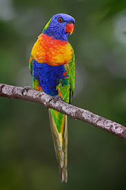
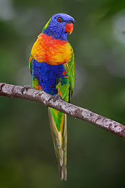

Eleva la vista al recorrer el sendero del aviario y siente el placer de ver volar a las aves que aquí se encuentran, pero no sólo mira hacia arriba, ya que en las lagunas en su interior puedes encontrar a muchos patos, pavos y flamencos que tienen su casa en este increíble recinto.
Para conocer de cerca a nuestros amigos alados, los visitantes tienen la oportunidad de introducirse en esta enorme jaula de 1.000 m2 de superficie, que se encuentra cubierta por una malla suspendida a 11 metros de altura.
Son 24 especies de aves que revolotean entre la abundante vegetación y las 4 lagunas de este paraíso.
 
